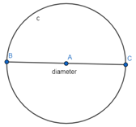
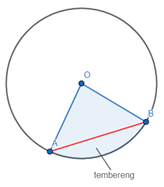
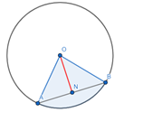

Pada lingkaran terdapat unsur-unsur yang saling berhubungan. Dalam lingkaran terdapat beberapa unsur yang saling berkaitan. Unsur-unsur tersebut akan dibahas secara lebih terperinci pada pembahasan berikut.
a. Titik Pusat
Unsur dari lingkaran yang akan kita bahas pertama yaitu titik pusat. Titik pusat merupakan suatu titik tetap yang berada pada lingkaran. Titik pusat ini terletak di tengah-tengah lingkaran. Titik pusat duatu lingkaran biasanya dilambangkan dengan O.
b. Jari-Jari
Unsur lingkaran yang selanjutnya yaitu jari-jari. Jari-jari lingkaran adalah segmen garis yang menghubungkan suatu titik pada lingkaran dengan titik pusat lingkaran. Jari-jari lingkaran juga dapat diartikan sebagai jarak dari titik pusat lingkaran ke suatu titik pada lingkaran. Lambang dari jari-jari lingkaran adalah r atau R.
c. Dimaeter
Diameter pada lingkaran sering didefinisikan dua kalinya panjang jari-jari. Lambang dari sebuah diameter adalah d atau D. Karena diameter merupakan dua kali dari panjang jari-jari, maka diameter dari suatu lingkaran dapat dirumuskan sebagai d=2r.

d. Busur Lingkaran
Busur lingkaran merupakan bagian dari keliling lingkaran. Jika ada titik A dan titik B yang terletak pada lingkaran dan titik itu disambungkan akan membentuk sebuah garis yang melengkung. Garis itulah yang disebut sebagai busur lingkaran.
e. Tali Busur
Unsur dari lingkaran yang ke-lima yaitu tali busur. Tali busur merupakan segmen garis yang menghubungkan dua titik yang terletak pada lingkaran. Diameter juga termasuk sebuah tali busur karena diameter menghubungkan dua titik pada lingkaran melalui titik pusat lingkaran.
f. Juring Lingkaran
Juring lingkaran adalah salah satu dari unsur-unsur lingkaran. Juring lingkaran merupakan sebuah daerah yang berada di dalam lingkaran yang dibatasi oleh dua jari-jari lingkaran dan busur lingkaran. Contoh dari juring lingkaran adalah potongan-potongan pizza.
g. Tembereng
Tembereng merupakan daerah lingkaran yang mempunyai batasan dari busur lingkaran dan tali busurnya. Tembereng ada yang kecil atau minor dan ada juga yang besar atau mayor. Di bawah ini merupakan contoh dari tembereng kecil atau minor.

h. Apotema
Unsur dari lingkaran yang terakhir adalah apotema. Apotema merupakan segmen garis yang ditarik dari titik pusat lingkaran dan tegak lurus pada sebuah tali busur. Apotema juga dapat didefinisikan sebagai jarak dari titik pusat ke tali busur pada suatu lingkaran. Pada gambar di bawah ini, segmen garis ON merupakan apotema.

i. Latihan
1. Unsur lingkaran yang berupa daerah lingkaran yang batasan dari busur lingkaran dan tali busurnya disebut …
a. Apotema
b. Titik pusat
c. Juring
d. Tembereng
2. Pada gambar di bawah, segmen ON merupakan …
a. Diameter
b. Apotema
c. Jari-jari
d. Juring
B. Keliling Lingkaran
Keliling dari suatu bangun datar biasanya adalah jumlah dari semua panjang sisi dari bangun datar tersebut. Begitu pula dengan lingkaran, sebuah lingkaran juga pasti memiliki keliling. Berikut adalah rumus dari keliling suatu lingkaran.
a. Rumus Keliling Lingkaran
b. Contoh Soal
1. Sebuah lingkaran memiliki diameter sepanjang 30 cm. Hitunglah besar keliling yang dimiliki lingkaran tersebut!
Penyelesaian:
Karena diketahui panjang diameternya adalah 30 cm, maka kita akan menggunakan nilai π=3,14. Dapat kita hitung kelilingnya seperti berikut:
K=πd
K=3,14×30
K=94,2 cm
Jadi, keliling dari lingkaran yang memiliki diameter 30 cm adalah 94,2 cm.
2. Carilah keliling dari lingkaran di bawah ini!
Penyelesaian:
Diketahui bahwa jari-jari dari lingkaran tersebut adalah 21 cm. Maka untuk nilai π yang akan digunakan adalah 22/7, karena 21 merupakan kelipatan dari 7. Maka dapat dihitung menjadi:
K=2πr
K=2×22/7×21
K=2×22×3
K=132 cm
Jadi, keliling dari sebuah lingkaran yang memiliki jari-jari 21 cm adalah 132 cm.
c. Latihan
1. Jika diketahui diameter suatu lingkaran adalah 23 cm, maka keliling lingkaran tersebut adalah …
a. 73,22 cm
b. 72,33 cm
c. 73,33 cm
d. 72,22 cm
2. Keliling sebuah lingkaran yang memiliki diameter 30 cm adalah …
a. 94,2 cm
b. 92,4 cm
c. 93,2 cm
d. 93,7 cm
3. Perhatikan lingkaran di bawah!
Keliling yang dimiliki lingkaran terebut adalah …
a. 202,24 cm
b. 202,74 cm
c. 207,24 cm
d. 207,74 cm
C. Luas Lingkaran
a. Rumus Luas Lingkaran
Tadi sudah dijelaskan mengenai keliling lingkaran, sekarang saatnya kita mempelajari tentang luas dari lingkaranLingkaran juga memiliki luas seperti dengan bangun datar yang lainnya. Luas dari sebuah lingkaran yang diketahui jari-jari atau diameternya dapat kita cari menggunakan rumus di bawah ini.
b. Contoh Soal
1. Tentukan luas dari sebuah lingkaran yang memiliki jari-jari sepanjang 13 cm!
Penyelesaian:
Karena diketahui jari-jarinya adalah 13 cm, maka kita akan menggunakan nilai π=3,14.
L= π×r^2
L=3,14×(〖13)〗^2
L=3,14×169
L=530,66 cm2
Jadi, luas dari sebuah lingkaran yang memiliki jari-jari 13 cm adalah 530,66 cm2.
2. Hitunglah luas dari lingkaran yang ada di bawah ini!
Penyelesaian:
L= 1/4×π×d^2
L= 1/4×22/7×〖35〗^2
L= 1/2×11×175
L=1/2×1925
L=962,5 cm2
Jadi, luas lingkaran yang diameternya 35 cm adalah 962,5 cm2.
c. Latihan
1. Luas sebuah lingkaran yang memiliki jari-jari 10 cm adalah …
a. 3,14 cm2
b. 31,4 cm2
c. 314 cm2
d. 3140 cm2
2. Lingkaran pada gambar di samping memiliki luas … cm2.
a. 1.366
b. 1.376
c. 1.386
d. 1.356
3. Pada sebuah lingkaran yang mempunyai diameter sepanjang 35 cm, memiliki luas … cm2.